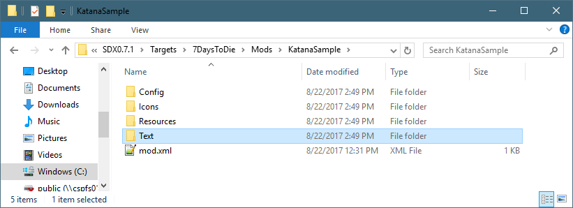
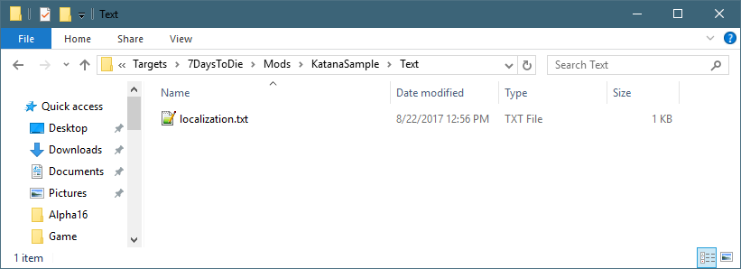
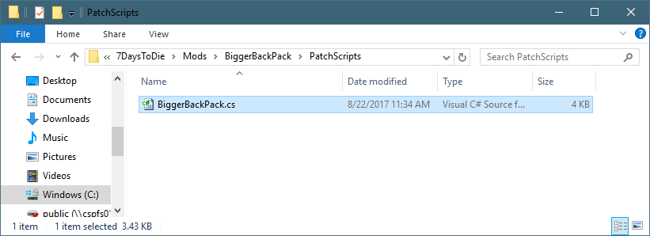

Undertanding an SDX mod
Start the SDX Launcher

Click on the "Mods Folder". This will open up the Explorer Window where the mods are installed.

Double click on the "KatanaSample" Folder, and look at the contents of the folder

The Config folder contains an XML file, that includes all the XML snippets and new items, blocks, and other items you want merged into SDX.
The Resources folder contains the Unity3D bundles, which are the new items and blocks.
mod.xml is a basic XML configuration file for SDX.
mod.xml:
The mod.xml gives information for the SDX Launcher, to show up in the tool.
<mod> <info> <author>sphereii</author> <name>Sample</name> <description>Sample Basic SDX Mod</description> <mod_version>1.0</mod_version> <game_version>16.2</game_version> <launcher_version>0.0.0</launcher_version> </info>
<!-- This references any config files that SDX needs to merge into your files --> <config_mods> <import file="Config\Sample.xml" /> </config_mods>
</mod> |
Author: The name of the author who created this mod, shows up in the SDX Launcher
Name: The name of the mod, shows up in the SDX Launcher
Description: Short description on what the mod does; Shows up in the launcher
Mod version: Which version of the mod it is, determined by the author
game_version: Which Game version the mod was designed for.
The <config_mods> points to where your mods' XML files are stored.
"Config" Folder:
Note: The use of the Config folder is optional. You can run your SDX Mod through the SDX7D2D without it merging any XML files. You can then edit your XML files manually as you normally would.
Double click on the "Config" folder, and open up the KatanaSample.xml in Notepad++. This XML adds a katana bundle using a unity3d bundle for its mesh.
<configs> <!-- This tells SDX to add to the Items.xml --> <config name="items"> <!-- This tells SDX to add the following Items to the bottom of the Items list --> <append xpath="/items"> <!-- New item will be Katana --> <item id="" name="katanamichonne"> <!-- Extend it from the machete, but add the custom mesh --> <property name="Extends" value="machete"/> <property name="Meshfile" value="#michonnekatana?katana" /> </item> </append> </config> </configs> |
SDX will read this XML file, and add its contents to the right XML of the game. At the bottom of the file, it shows where it's adding the recipe on how to make a Katana using your new items.
All of the <config> tags need to be in between the root node, which is the <configs> tags.
Sample Items Code |
Description |
<config name="items"> |
This tells SDX that everything in between the <config> tags will be included in the Items.xml file |
<append xpath="/items"> |
This tells SDX that everything in between the <Append> path will be included inside of the <items> tag of items.xml |
<item id="" name="katanamichonne"> |
This tells SDX the name of the new item to add. Notice there is no ID? SDX will auto-assign it an ID at build time. |
<property name="Meshfile" value="#michonnekatana?katana" /> |
This will tell SDX, at run time, what the meshfile is called. |
</append> |
Closes the append tag |
</config> |
Closes the Items tag |
Notice that there is no Item ID specified? When an Item ID, or block ID is not specified, SDX, at build time, will auto-assign an ID. Therefore, all your items and blocks will be auto-numbered.
Resources:
The Resources folder contains all your Unity 3D models and textures, stored as Unity Bundle 3D files.

Text:
The Text folder is optional, but contains the localization files.

Example:
Key,Source,Context,Changes,English,French,German,Klingon,Spanish katanamichonne,items,Melee,KgNone,Michionne's katana,,,, katanamichonneDesc,items,Melee,New,Michionne's katana is ready to slice and dice up the zombies,,,, |
PatchScript:
Some SDX Mods, like the Bigger Back Pack Mod, contains a PatchScript folder. A PatchScript is a C# script that is compiled at SDX Build time, and allows injection into the Assembly-CSharp. The SDX Launcher reads any files in this folder, and tries to compile it.

Created with the Personal Edition of HelpNDoc: Free Kindle producer